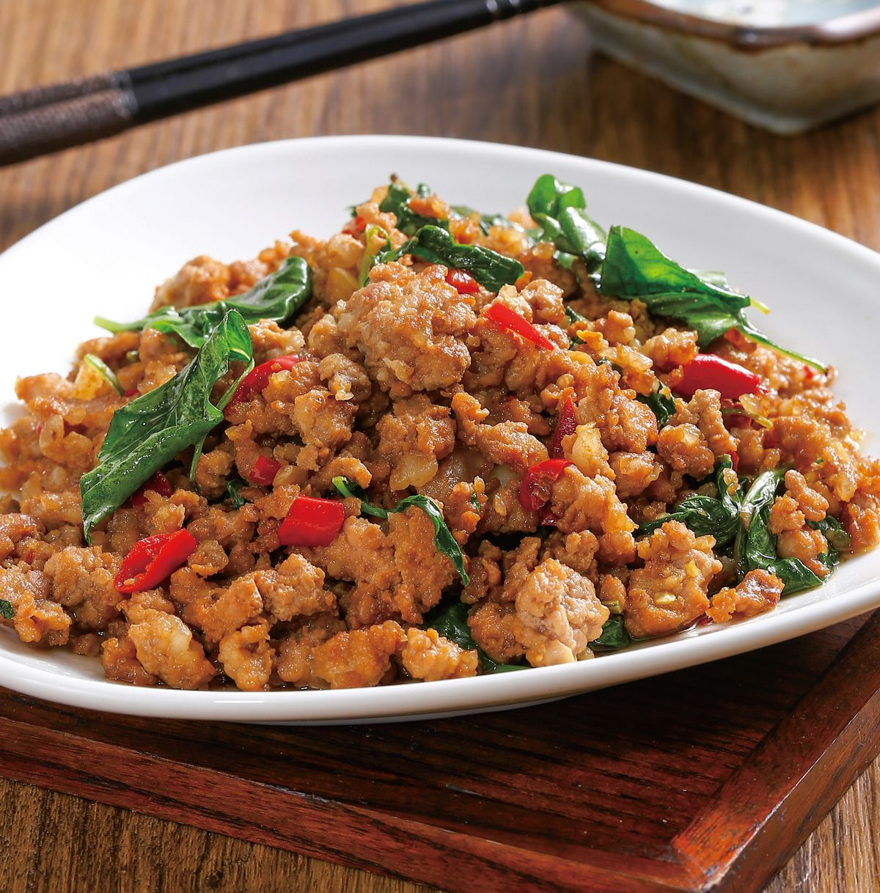
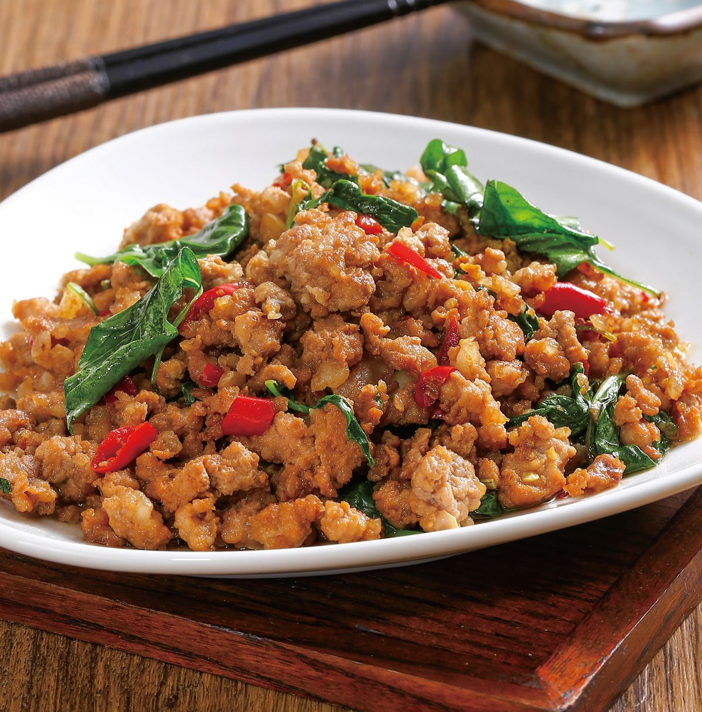

打拋豬
「打拋豬肉」是泰國的國民美食，是一道最常見、平價的炒豬肉，得名於它的食材：「打拋葉」（HOLY BASIL LEAVES）是狀似九層塔的辛香料，氣味更加濃烈辛嗆，台灣的餐廳是從泰文「กะเพรา」（KAPRAO)音譯而來，在台灣不易買到，一般多用九層塔代替，但味道仍有差異，如果喜歡打拋葉的香氣者可用「打拋醬」來代替。
「打拋豬肉」是泰國的國民美食，是一道最常見、平價的炒豬肉，得名於它的食材：「打拋葉」（HOLY BASIL LEAVES）是狀似九層塔的辛香料，氣味更加濃烈辛嗆，台灣的餐廳是從泰文「กะเพรา」（KAPRAO)音譯而來，在台灣不易買到，一般多用九層塔代替，但味道仍有差異，如果喜歡打拋葉的香氣者可用「打拋醬」來代替。
